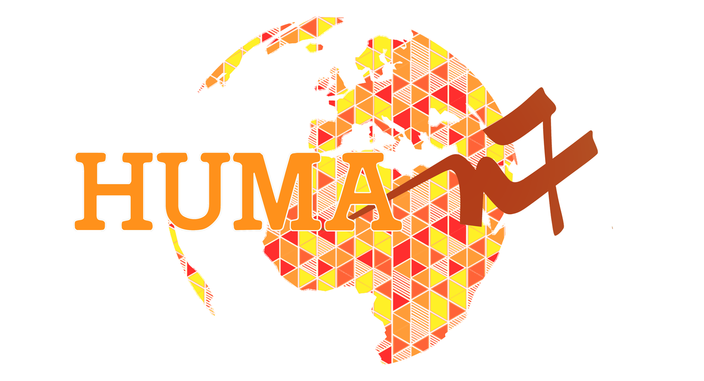
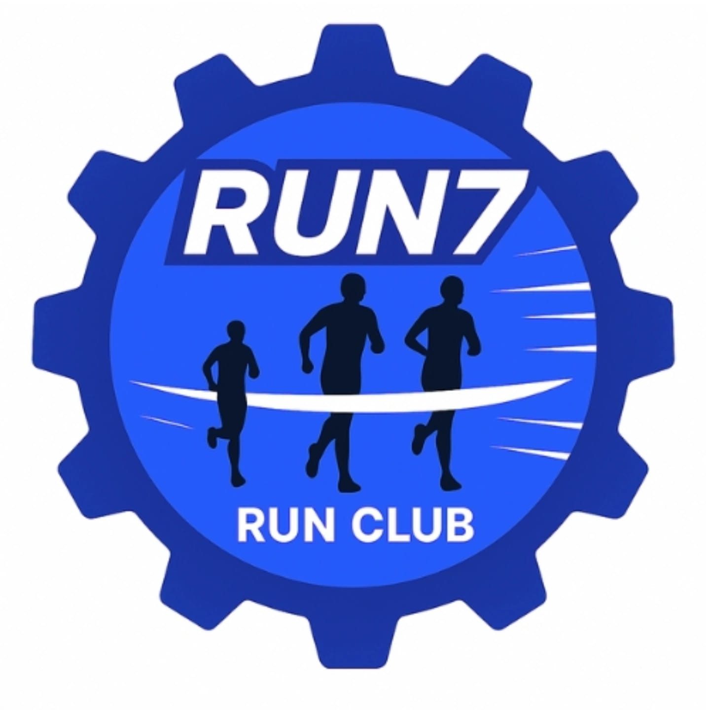
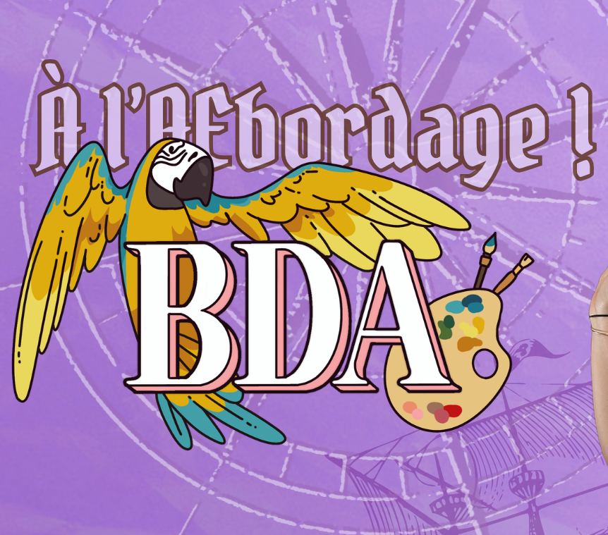
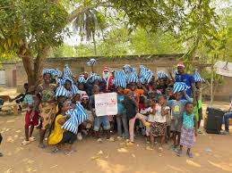
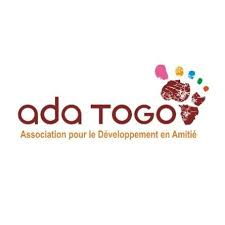
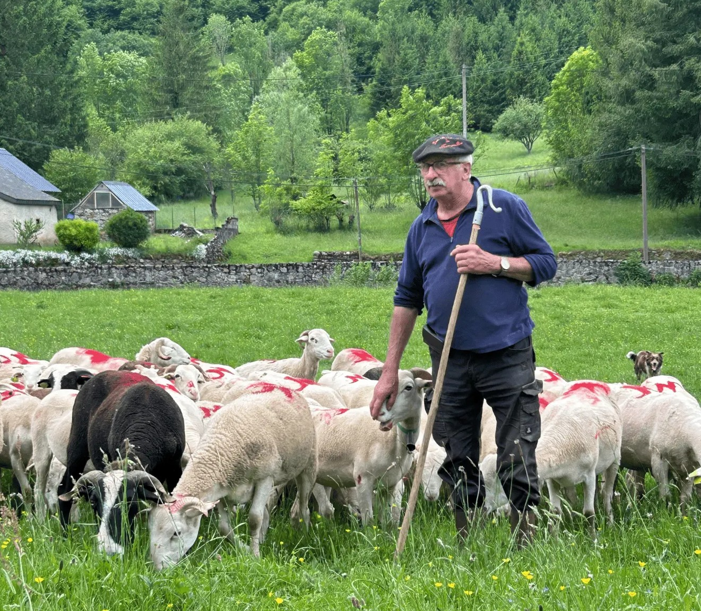
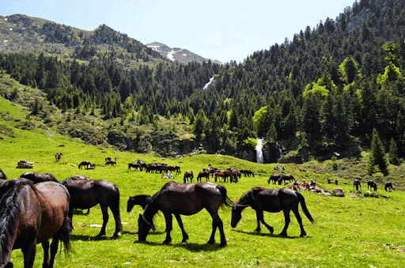
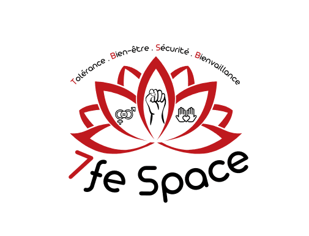

In May 2026, I was elected President of Human7, a student association dedicated to supporting international solidarity projects led by first-year students and organising local charitable initiatives. This year, five student teams are developing projects abroad. We support them in securing funding, finding partner organisations and designing meaningful projects that meet local needs. We also organise local initiatives, including the ENSEEIHT Pink Run, participation in the national food bank collection and second-hand clothing sales on campus. Our goal is to give students opportunities to get involved in causes they care about and make a positive impact. As President, I coordinate the different projects, manage the team and organise schedules to ensure that our initiatives run smoothly.
Instagram
Since May 2026, I have been Secretary of Run7, ENSEEIHT's student running club. We organise weekly running sessions in Toulouse, as well as weekend trail-running outings with students from other engineering schools. We also organise an annual running weekend, giving students the opportunity to work towards their sporting goals alongside their peers in a friendly and motivating atmosphere. My responsibilities include writing meeting minutes, managing social media communications, and helping organise and lead running sessions.
Instagram
In 2026, I joined the Bureau des Arts (BDA), ENSEEIHT's student arts and culture association. Alongside two other students, I am responsible for organising the public-speaking competition, an event that brings together students from the three Toulouse INP engineering schools: ENSEEIHT, ENSIACET and Toulouse INP-AgroToulouse. I am also the association's point of contact for our partnership with Théâtre de la Cité, which enables students to attend theatre performances at discounted prices throughout the year. Through these activities, I contribute to promoting cultural events, strengthening connections between students from different schools and making the arts more accessible to the student community.
Instagram

From July to August 2026, I spent five weeks in Togo as part of an international solidarity project with a team of six ENSEEIHT students. We worked in collaboration with Ada Togo, a local organisation that connected us with young Togolese people to jointly design and carry out our project. Our main objectives were to:
This experience allowed me to immerse myself in a new culture and develop valuable personal and professional skills, particularly adaptability, teamwork and empathy. Above all, it taught me the importance of listening to local needs and building projects collaboratively to create a meaningful and lasting impact.
Instagram
Every year, I help organise a market in the mountains that promotes local products and the work of farmers and breeders. This market is an opportunity to bring the region to life and raise its profile. I help set up the marquees, serve the evening meal and write and distribute the songbooks. I also organise a treasure hunt for children so that they can discover the market in a fun way with riddles and questions to ask the traders.

Every year, farmers take their livestock up into the mountains for the summer: this practice allows them to make optimal use of the natural resources available throughout the year. The herds feed on the green grass of the mountains, thus avoiding overgrazing. Transhumance also serves to pass on traditional knowledge and boosts the local economy. In this association, I help to accompany the horses from the farmer's premises to the mountainous area where they will spend the summer. I also help to distribute meals during the event.

On November 28, I will attend a training to learn how to support victims of gender-based and sexual violence. I will also be able to refer them to appropriate professionals. This will allow me to work during ENSEEIHT’s festive events to ensure a safe and welcoming environment for everyone. This is a cause close to my heart because I want to support those who are going through difficult situations and contribute to an environment where everyone feels heard and respected.